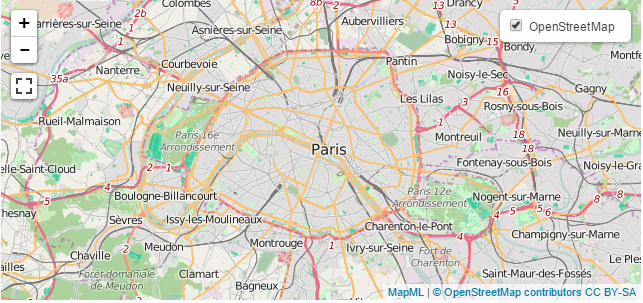
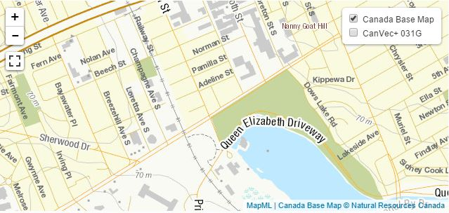

Map Markup Language
- This version:
- https://github.com/Maps4HTML/MapML/
- Latest version:
- https://maps4html.org/MapML/spec/
- Previous version:
- https://github.com/Maps4HTML/MapML/
- Editors:
- Peter Rushforth, Natural Resources Canada
- Contributors:
- Robert Linder, Joan Maso, Elf Pavlik.
- Participate:
- File an issue (open issues)
- Feedback:
- public-maps4html@w3.org (archives)
Copyright © 2015-2019 the Contributors to Map Markup Language, published by the Maps for HTML Community Group under the W3C Community Contributor License Agreement (CLA). A human-readable summary is available.
Abstract
Map Markup Language is a text format for encoding map information for the World Wide Web.
The objective of MapML is to allow Web-based user agent software (browsers and others) to display and edit maps and map data without necessary customization.
The standard HTML map element allows the HTML author to designate sub-areas of an image to be used as hyperlinks, creating a two-dimensional "image map".
This functionality, while useful, is limited to the simplest of mapping applications. A more generally useful map element would enable (functions like) zooming and panning of the map
in a traditional Web mapping way, while simultaneously being simple and declarative for an HTML author to include on their Web page. This specification proposes the syntax and semantics of an extended map element.
The applications of Web maps are diverse. The wide scope of use of Web maps appears similarly broad to that of other Web media types, such as video or audio. In other words, there are a multitude of reasons for wanting to include
a map on your Web page. The HTML map element proposed by this document should be provider-agnostic,
and should only depend on Web standards, including Uniform Resource Identifiers, Document Object Model, Cascading Style Sheets and media types.
Status of This Document
This section describes the status of this document at the time of its publication. Other documents may supersede this document.
Although W3C has provided the template for this document for community use, the document is not affiliated with W3C in any way, and is not endorsed or approved by W3C.
This document is a draft of this specification, produced by an independent party. It is inappropriate to cite this specification as as a publication of the World Wide Web Consortium (W3C), or anything other than a work in progress by an independent entity.
In particular, certain aspects of this document are yet to be defined. Feedback from the community is solicited for accessibility and DOM APIs.
Intent of this Specification
This specification describes Map Markup Language (MapML), which is a hypertext document format for maps. This specification is also intended as a proposal to the HTML Working Group to extend the semantics of the standard HTML map element.
MapML is needed because while Web browsers implement HTML and SVG, including the <map> element, those implementations do not meet the requirements of the broader Web mapping community. On the one hand, the
semantics of maps are quite different from those of Scalable Vector Graphics, while on the other hand, the semantics of the HTML map element are incomplete or insufficient relative to modern Web maps and mapping in
general. Robust web maps are implemented by a variety of non-standard technologies. Web maps do not work without script support, making their creation a job beyond the realm of beginners' skill sets, while making them potentially
inaccessible due to developer inattention. In order to improve collaboration and integration of the mapping and Web communities, it is desirable to enhance or augment the functionality of the <map> (or a similar <new>)
element in HTML to include the accessible user interface functions of modern web maps (e.g. panning, zooming, searching for, and zooming to, styling, identifying feature properties, etc.), while maintaining a simple, declarative,
accessible interface for HTML authors. At the same time, the DOM interface to the new or improved elements should provide low-level programmable mapping hooks in the style of the Web.
To achieve this it is necessary to define a new hypertext format (MapML) and media type which encodes map semantics.
This document is an evolving proposal to the Web and Mapping communities. Collaborators and implementation experience is requested. The intention is to define a new hypertext format (MapML) which encodes map layer semantics directly, but which leverages existing standards where possible and desirable, such as Cascading Style Sheets and OGC Simple Features, for example. MapML will provide an essential part of the contract between Web user agents and Web servers when map features are exchanged, in a manner based on the architectural style of the Web, in a similar way to how HTML provides (part of) the contract for documents.
Implementation Experience
MapML has been implemented using custom elements by Natural Resources Canada, which participates in the W3C Maps for HTML Community Group, as well as the Open Geospatial Consortium. It is hoped that other organizations will also implement MapML and contribute their experience back to the community via the Community Group and Github.
Map Markup Language services are provided by Natural Resources Canada as part of the Canadian Geospatial Data Infrastructure.
The reader is requested to contact the editor with any known implementations of Map Markup Language or other implemented support for this proposal.
The customized built-in HTML <map> element was built and is maintained by the Maps for HTML Community Group.
Changes Since the Previous Draft
- Merge the HTML <map> element proposal into this specification (Fix: issue #55).
- Update schema, such as it is (needs more than a schema language can provide e.g. schematron or something like HTML has)
- Deprecate input@type= xmin,ymin,xmax,ymax,projection.
- Remove input@type=search for now (not implemented, nor yet discussed).
- Add input@units=gcrs keyword.
- Extend input@type=position keyword list to be based on CSS object-position property value domain
- Add input@axis= latitude,longitude keywords
- Remove reference to link@rel=search, which is not supported.
- Add Figure 1 in examples. Change URLs to example services.
- Update Abstract, status, intent, implementation experience,feedback and Change sections
- Rename link@tcrs to link@projection
- Add link@rel=style link relation
- Add select element
- Add label element
- Add features link relation
- Add Google Translate widget
- Update links to schema directory on github.
- Add WICG link
- Changes in input@units descriptions about WGS84
- Added an equirectangular tiling schema for WGS84
- Added a table of the different Coordinate System used
- Better connecting TCRS table with input@units values
- Align prose for allowed link@href context with schema.
- Fix issue with description of multi-geometries as being 'two or more', replace with 'One or more'
- Fix issue with CamelCase of geometry types, replace with lowercase
- Fix issue with inconsistency with GeoJSON multipoint coordinate encoding
- Fix the order of parameters to the LatLng(lat,lng) pseudofunction in the definition of WGS84
Level of Endorsement by the Community
Please join the W3C Maps for HTML Community Group if you would like to participate in the development and implementation of this specification.
You can also star us on Github.
Patent Information
Development of this specification together with implementations is done under the terms of the W3C Software Notice and License, in accordance with the rules of the W3C Community Groups program.
How to provide feedback
Please send comments on this specification to public-maps4html@w3.org, or WICG, or open an issue.
1. Introduction
This section is informative.
Map Markup Language is a text-based format which is allows map authors to encode map information as hypertext documents exchanged over the Uniform Interface of the Web. The format is defined using some characteristics of HTML, MicroXML, GeoJSON and other standards.
This specification describes a proposed enhancement to the map element syntax and processing model. The semantics
of the existing standard map element allow an HTML
author to create area elements over a standard HTML
img, which then act as hyperlinks. The existing standard map element is a perfect extension point in HTML for modern Web maps,
since it shares common (ancestor) abstract semantics (2D area on which
authors can draw hyperlinks), which can be relied on as widely implemented
and stable fallback markup processing by HTML authors targeting newer
or future user agents which implement this proposal.
This proposal to update the map element enhances the core
functionality of the map element to include cartographic
Web applications. The intention of this specification is to describe
the map element independent of underlying
implementation - whether that be native browser or custom elements.
Details specific to how to author a Web page using the
Custom Elements implementation can be found in the
Web Map Custom Element project.
2. Conformance
This section is normative.
Conforming documents are documents that comply with all the conformance criteria for MapML documents. For readability, some of these conformance requirements are phrased as conformance requirements on authors; such requirements are implicitly requirements on documents: by definition, all documents are assumed to have had an author. (In some cases, that author may itself be a user agent — such user agents are subject to additional rules, as explained below.)
User agents fall into several (overlapping) categories with different conformance requirements.
- Web browsers and other interactive user agents
-
Web browsers are one of the primary client technologies anticipated for MapML, however other categories of interactive client could also be developed, for example as extensions to / plugins for traditional Geographic Information Systems software.
- Non-interactive presentation user agents
-
User agents that process MapML documents purely to render non-interactive versions of them must comply to the same conformance criteria as map browsers, except that they are exempt from requirements regarding user interaction.
While MapML documents are thought to describe map semantics in a standard way, the scope of this specification is intended to not overlap that of HTML documents themselves. As such, this conformance class may not be relevant, except when consuming MapML within the context of an HTML instance's user agent. For example, the legend and other supporting map related information is out of scope for MapML, whereas it is conceivably in-scope for HTML documents.
Typical examples of non-interactive presentation user agents are printers.
- User agents with no scripting support
-
Scripting can form an integral part of a Web application. User agents that do not support scripting, or that have scripting disabled, however should still be able to display and enable map-user interaction via the affordances described in this document.
- Conformance checkers
-
Conformance checkers must verify that a document conforms to the applicable conformance criteria described in this specification.
The term "MapML validator" can be used to refer to a conformance checker that conforms to the applicable requirements of this specification.
Schemas cannot express all the conformance requirements of this specification. Therefore, a validating XML processor and a DTD cannot constitute a conformance checker.
To put it another way, there are three types of conformance criteria:
- Criteria that can be expressed in a schema (RelaxNG, XML Schema etc).
- Criteria that cannot be expressed by a DTD, but can still be checked by a machine.
- Criteria that can only be checked by a human.
A conformance checker must check for the first two. A simple RelaxNG-based validator only checks for the first class of errors and is therefore not a conforming conformance checker according to this specification.
- Data mining tools
-
Applications and tools that process HTML and MapML documents for reasons other than to either render the documents or check them for conformance should act in accordance with the semantics of the documents that they process.
- Authoring tools and markup generators
-
Authoring tools and markup generators must generate conforming documents. Conformance criteria that apply to authors also apply to authoring tools, where appropriate.
For example, a markup generator must ensure that polygons have three or more vertices, the first and last of which have the same location.
In terms of conformance checking, an editor has to output documents that conform to the same extent that a conformance checker will verify.
When an authoring tool is used to edit a non-conforming document, it may preserve the conformance errors in sections of the document that were not edited during the editing session (i.e. an editing tool is allowed to round-trip erroneous content). However, an authoring tool must not claim that the output is conformant if errors have been so preserved.
Authoring tools are expected to come in two broad varieties: tools that work from structured databases, and tools that work on an interactive What-You-See-Is-What-You-Get media-specific editing basis (WYSIWYG).
All authoring tools, whether WYSIWYG or not, should make a best effort attempt at enabling users to create accessible, well-structured, and efficient content.
This document contains explicit conformance criteria that overlap with some RNG definitions in requirements. If there is any conflict between the two, the explicit conformance criteria are the definitive reference.
Within this specification, the key words "MUST", "MUST NOT", "REQUIRED", "SHALL", "SHALL NOT", "SHOULD", "SHOULD NOT", "RECOMMENDED", "MAY", and "OPTIONAL" are to be interpreted as described in RFC 2119 [RFC2119]. However, for readability, these words do not necessarily appear in uppercase in this specification.
3. Use Cases and Requirements
This section is informative.
3.1. Use Cases
The following usage scenarios illustrate some of the ways in which Map Markup Language might be used for various applications:
-
Tiled maps: Modern map services are dominantly created by composing adjacent map 'tiles' (often bitmapped images) into a coherent and unified image of a map.
-
Image-based maps: Web services typically produce a single geo-referenced image which constitutes a map. MapML encodes URL references to such images, together with appropriate georeferencing metadata.
-
Vector-based maps: Geospatial databases, for example PostGIS, are able to serve and manipulate vector representations of features which can be symbolized according to their properties.
-
Multi-layer maps: Maps are often required to overlay information in such a way as to enable both visual and automatated spatial relationship processing. MapML will support the layering of information using the 'painters model', wherein elements are drawn in document order overtop of earlier elements, together with CSS styling (transparency) techniques.
-
Use CSS for map styles: MapML elements should be style-able with CSS rules supplied by the MapML author. For example, the MapML author should be able to link to a stylesheet from a MapML document.
-
Location search: A MapML service might want to allow service consumers to search within the contents of a service for a place name or an address, over which the map is repositioned when a selection is made. MapML should provide (markup) facilities to enable such searches without forcing the client download large amounts of geospatial data.
-
Hyperlinks between and within services: MapML should allow service-level links such that service providers can link together / federate to provide apparently seamless spatial coverage.
-
Feature identification: If a MapML document includes features, the MapML author should be able to markup any or all of those features in a way which lends itself to feature identification and property display.
-
Attribution: MapML documents encode citation information on a per-request basis, making it available as markup in the response.
The following use cases illustrate some of the ways in which the <map> element might be used in Web mapping applications:
- Multiple, user-controllable map layers
The
mapelement allows HTML authors to add zero or more map layers to the map, with optional controls enabled declaratively. - Selection / identification / description of map features
The user should be able to interact with individual map features as individual elements, with or without hyperlinks.
- Rescaling to expose greater detail (zooming)
The user should be able to zoom in or out on the map to expose more or less detail as desired / possible.
- Repositioning to examine relationships between places (panning)
The user should be able to pan the map so as to examine locations other than the default or initial location displayed, as desired / possible.
- Using Cascading Style Sheets to enable HTML authors to control the style of their own map content.
The HTML author should be able to use Cascading Style Sheets on the
mapelement and its children so as to create the user experience desired, with the caveat that the style of features in map sources / services should be under the control of the exclusive control of the map content author, per MapML requirements. In brief, the HTML author should not be able to style content that does not belong to them, but should be able to create and style features displayed on the map from their own domain. - Map links of various shapes, including points, lines, polygons, circles and rectangles
HTML authors should be able to place and style links on a web map, allowing navigation of the browser through user selection.
- Links within and between services to enable a "Web of maps"
A map layer could be "distributed" over many URLs, and the user agent would seamlessly present the contents of those URLs to the user, possibly although not necessarily as though they were a single end point. For example, a response document should be able to communicate a link to an adjacent zoom level or geographic area in the response entity and the user agent could conditionally follow that link depending on the gestures of the user.
- API-level access to the map, its layers, features and events
Scripting has an important place in the presentation of map information. Declarative web maps should be able to be progressively enhanced through the use of script. Furthermore, web maps should emit map- and control-specific events which support progressive enhancement.
- Crawler-generated location-enabled, searchable indexes of Web content
Web maps should serve to geocode content in a Web page, such that crawlers may be able to augment their indexes with location information, leading to enhanced discovery possibilities for Web search users.
3.2. Requirements
Uniform interface: No URL recipes should be required to be supported by clients - support for simple opaque URLs and standardized media types should be all that is required clients. Application state / state transitions should be conveyed in markup.
Implementation commitments: Simple, lightweight server software should be available to allow authors to serve spatial resources as MapML.
One or more accessibile Custom Element clients should be available to demonstrate client functionality.
Ease of authoring: A range of authoring situations should be supported, from simple single file services to robust MapML services over large volumes of framework data.
4. Web Maps
The <map> element, in conjunction with any <layer> and <area> element descendants,
defines an interactive map media element.
4.1 Web mapping elements and API
This section is normative.
4.1.1 The <map> element
- Categories:
- Flow content.
- Phrasing content.
- Palpable content.
- Embedded content.
- Interactive content.
- Contexts in which this element can be used:
- Where embedded content is expected.
- Content model:
- If lat, lon, and zoom
are NOT present: Transparent; otherwise: Zero or more
layerorareaelements. - Content attributes:
- Global attributes
zoom- a positive integer zoom (scale) valuelat- a decimal WGS84 latitude value for the map centerlon- a decimal WGS84 longitude value for the map centerprojection- a case-sensitive string identifier of the MapML coordinate reference system used by the map. Default isOSMTILE.controls- Show user agent map controlswidth- Horizontal dimensionheight- Vertical dimension- Tag omission in text/html:
- Neither tag is omissible
- Allowed ARIA role attribute values:
application- Allowed ARIA state and property attributes:
- Global aria-* attributes
- DOM interface:
-
[NamedConstructor=Map(unsigned long width, unsigned long height, double lat, double lon, unsigned short zoom, optional string projection, boolean controls)] interface HTMLMapElement : HTMLElement { readonly attribute HTMLCollection layers; readonly attribute HTMLCollection areas; readonly attribute unsigned short zoom; readonly attribute double lat; readonly attribute double lon; readonly attribute string projection; attribute boolean controls; attribute unsigned long width; attribute unsigned long height; void zoomTo(double latitude, double longitude, optional unsigned short zoom); };
The map element, in conjunction with child layer and optionally
area elements, allows authors to embed an interactive web mapping application in a rectangular area of a web page.
The lat, lon attributes locate the initial center of the map. The
zoom attribute indirectly identifies an initial scale of the map.
After initialization, the lat,lon and zoom IDL properties reflect the location and scale of the map respectively, based on changes initiated
by the user or by script.
- map .
areas -
Returns an
HTMLCollectionof theareaelements in themap. - map .
layers -
Returns an
HTMLCollectionof thelayerelement children of themap.
The areas attribute must return an HTMLCollection
rooted at the map element, whose filter matches only area child elements.
The layers attribute must return an HTMLCollection
rooted at the map node, whose filter matches only layer child elements of this map element.
The controls boolean attribute indicates whether default map controls should be displayed on the map. The nature and position of the controls
is user agent implementation-defined. The controls can be added or removed by toggling the controls property of the element.
The projection attribute value identifies the coordinate system for the map and all the layer element children, with the exception of
layer children in the WGS84 projection. WGS84 serves as a "wild-card" projection; features encoded in longitude, latitude values according to this projection can often be re-projected for
use on maps encoded in other projections. As such, layer children do not have a projection attribute, in that they are verified to share the projection declared by their
parent map element. Once established, the projection of the map is read-only.
Unless otherwise specified, units are based on pixels projected and transformed from the units of the underlying projection system. The complete definition of these coordinate reference systems can be found in the
Tiled Coordinate Reference Systems table.
The required width and height attributes of the map element allow the HTML author to explicitly set the size of the rectangular area devoted to the map.
If the attributes are not set directly by the HTML author, their values must be established via CSS width and height properties or through script. In any case, these values must be established
in order for the map to process and display its content. The map can be re-sized via changes to those properties.
The location and zoom level of the map created with the map element can be changed via the zoomTo(...) API method, which will change the zoom, lat and lon properties.
4.1.2 The <layer> element
- Categories:
- Flow content.
- Phrasing content.
- Palpable content.
- Embedded content.
- Interactive content.
- Contexts in which this element can be used:
- As a child of the map element
- Content model:
- If the
srcattribute is present: Nothing. If nosrcattribute is present: Metadata content describing nested Map Markup Language content - Content attributes:
- Global attributes
src- Address of the resourcelabel- String label for the layer in the layer control, if displayedchecked- Layer on/off statusdisabled- Sets the disabled state of the layer in the layer controlreferrerpolicy- Referrer policy for fetches initiated by the elementcrossorigin- A CORS settings attribute, specifies how the element handles crossorigin requests- Tag omission in text/html:
- Neither tag is omissible
- Allowed ARIA role attribute values:
- None
- Allowed ARIA state and property attributes:
- Global aria-* attributes
- DOM interface:
-
interface HTMLLayerElement : HTMLElement { readonly attribute DOMString src; attribute DOMString label; attribute boolean checked; readonly attribute boolean disabled; attribute boolean hidden; readonly attribute LegendLink[] legendLinks; attribute DOMString referrerPolicy; attribute DOMString? crossOrigin; }; interface LegendLink { readonly attribute DOMString type; readonly attribute DOMString rel; readonly attribute DOMString href; readonly attribute DOMString title; readonly attribute DOMString lang; readonly attribute DOMString hreflang; readonly attribute DOMString sizes; };
The map element displays its child layer elements similarly to "acetate" layers on a (paper) map. The layers follow the painters model, whereby
layer elements are displayed on top of earlier siblings according to their document order. layer transparency is controlled by the CSS opacity property.
In contrast to the HTML media elements' source child element where a single
source element is selected by the user agent for play, the map element's child layer elements are
visually combined with sibling layer elements and presented by the parent map element as a pan-able, zoom-able two-dimensional image.
The display state (on / off) of the content represented by the layer element is controlled by
the checked boolean attribute and corresponding property. If checked, the layer is drawn on the map in the sequence it is found in the parent element; if not checked
the layer is not drawn but should remain visible in the map element's representation of controls in an "unchecked" state.
The src attribute value is the URL of a web resource encoded in Map Markup Language.
The hidden boolean attribute can be set to remove the layer from the map layer control, but it will remain displayed on the map. In order to
remove the layer from the map display, it can be have its checked property toggled, or be removed from the DOM.
The disabled property is a read-only boolean indicator of the visibility of the layer on the map. If the layer is not visible due to errors, including projection,
zoom or extent mismatch, the property will be true and if the layer is present in the layer control (i.e. hidden is false), it will be disabled in that control i.e. not checkable.
4.1.3 The <area> element
- Categories:
- Flow content.
- Phrasing content.
- Contexts in which this element can be used:
- As a child of the map element
- Content model:
- Nothing.
- Content attributes:
- Global attributes
href- Address of the hyperlinkalt- User-visible labelcoords- Coordinates for the shape to be created on the mapshape- The kind of shape to be created on the map- Tag omission in text/html:
- Neither tag is omissible
- Allowed ARIA role attribute values:
linkrole (default - do not set).- Allowed ARIA state and property attributes:
- Global aria-* attributes
- Any aria-* attributes applicable to the allowed roles.
- DOM interface:
-
interface HTMLAreaElement : HTMLElement { attribute DOMString href; attribute DOMString alt; attribute DOMString coords; attribute DOMString shape; };
The area element allows the HTML author to encode and style a limited set of spatial feature types on its parent map element,
using familiar image map coordinates. Such features
can be optionally designated as hyperlinks to be selected by the user.
If present, the href attribute identifies the designated coordinate area as a hyperlink. If no href attribute exists, the area is designated as a non-interactive area.
The alt attribute specifies a label which can be used by the user agent for ephemeral and non-visual labelling of the area.
If the area element has no href attribute, then the area represented by the element cannot be selected, and the alt attribute must be omitted.
The coords attribute is a
comma-separated list of integer coordinate values which delimit the geometry of the (area) feature. The shape attribute identifies the type of geometry which is
encoded as coordinates in the coords attribute.
The shape attribute is an enumerated attribute. The following table lists the keywords defined for this attribute. The states given in the first cell of the rows with keywords give the states to which those keywords map.
| State | Keywords | Notes |
|---|---|---|
| Circle state | circle |
|
| Default state | default |
|
| Polygon state | poly |
|
| Rectangle state | rect |
|
| Marker state | marker |
new |
| Line state | line |
new |
The shape attribute may be omitted. The missing value default is the rectangle state.
The coords attribute must, if specified, contain a valid list of integers. This attribute gives the coordinates for the shape described by the
shape attribute. The processing for this attribute is described as part of the image map processing model.
In the circle state, area elements must have a coords attribute present, with three integers,
the last of which must be non-negative. The first integer must be the distance in CSS pixels from the left edge of the image to the center of the circle, the second integer must be the distance
in CSS pixels from the top edge of the image to the center of the circle, and the third integer must be the radius of the circle,
again in CSS pixels.
In the default state, area elements must not have a coords attribute. (The area is the
whole area of the map on the page.)
In the polygon state, area elements must have a coords attribute with at least six integers,
and the number of integers must be even. Each pair of integers must represent a coordinate given as the distances from the left and the top of the
map in CSS pixels respectively, and all the coordinates together must represent the points of the polygon, in order.
In the rectangle state, area elements must have a coords attribute with exactly four integers,
the first of which must be less than the third, and the second of which must be less than the fourth. The four values must represent, respectively, the
distance from the left edge of the map to the left side of the rectangle, the distance from the top edge to the top side, the distance from the left edge
to the right side, and the distance from the top edge to the bottom side, all in CSS pixels.
In the marker state, area elements must have a coords attribute with exactly two integers.
The first integer must be the distance in CSS pixels from the left edge of the map to the top left corner of the marker, the second integer must be the distance
in CSS pixels from the top edge of the map to the top left corner of the marker.
In the line state, area elements must have a coords attribute with at least four
integers, and the number of integers must be even. Each pair of integers must represent a coordinate given as the distances from the left and the top of the
map in CSS pixels respectively, and all the coordinates together must represent the points of the line, in order.
The intention of the area element is to extend the behavior of the existing HTML area element. For information pertaining to
the processing of various link types created by the area element, please refer to the description of hyperlink processing for the
HTML area element.
4.2. Authoring
A Web map is an embedded media element which enables dynamic cartographic Web applications in HTML documents.
A Web map is a rectangular page area, represented in HTML in the form of a map element, containing a set of zero or more
layer elements. A Web map represents a region of the earth's surface in two dimensions. A map's initial location
(lat, lon), extent (width and height)
and scale (zoom) are defined by its attributes.
Consider a map of Paris:

This map can be created with the following markup:
<map zoom="11" lat="48.85591" lon="2.3469543" width="640" height="300" controls>
<layer label="OpenStreetMap" src="https://example.com/mapml/osm/" checked crossorigin></layer>
</map>
A Web map can have zero or more layers. Map layers are drawn in document order of the layer elements, following the painters model. If the user
(or author) enables more than one layer, all the layers will be painted, in document order. Features in layers drawn earlier will be painted over by later layers. Opacity of layers can be managed with CSS, if necessary.
Here is a map of Ottawa, with two layers:
This map can be created with the following markup:
<style>
.transparency {
opacity: 0.2;
}
</style>
<map zoom="15" lat="45.398043" lon="-75.70683" width="640" height="300" projection="CBMTILE" controls>
<layer label="Canada Base Map" src="https://example.com/mapml/cbmt/" checked crossorigin></layer>
<layer label="CanVec+ 031G" src="https://example.com/mapml/canvec/50k/features/" crossorigin class="transparency"></layer>
</map>
4.4 Syntax
The map element has a different content model defined by this specification, compared to that defined by the HTML standard.
At such a moment as is warranted, the standard definition of the map
and area elements will be
merged into this specification, but it is probably confusing to merge
the definitions at this point in time. The intention is, however, that
the existing standard map element behaviour and markup can be used by
authors as a widely supported fallback mechanism for non-compliant browsers as this
specification is incrementally implemented by the platform browsers.
5. Semantics, Structure and Styling of MapML Documents
This section is normative.
5.1 Semantics
5.1.1 Coordinate Systems
In this document, all Coordinate Systems (CS) are 2D. A 2D CS has two axes, one horizontal (commonly related to west-east direction), and one vertical (commonly related to north-south direction; do not confuse it with
"elevation"). This document defines the axis order of coordinate pairs serialized in MapML documents which the axis-specific values are not distinguished by markup, such as within the coordinates element. In documents
conforming to this specification, we override any externally defined axis order. Coordinates are serialized as horizontal axis followed by vertical axis, separated by whitespace. Where applicable, coordinate pairs are
separated by whitespace. The axis names of a coordinate system are identified by this document.
5.1.2 Coordinate Reference Systems
A Coordinate Reference System (CRS) is a Coordinate System that is referenced to locations on the Earth. Maps are graphics which follow mathematical rules (called projections) established to transform locations on Earth to locations on a plane (formerly paper, more recently a device screen). Projections are mathematical equations designed to conserve particular properties of the source location, and often have parameters that can be used to induce desired properties for particular locations.
To facilitate the sharing of CRS definitions, the International Association of Oil ans Gas Producers (IOGP) (formerly known as the European Petroleum Survey Group, [EPSG]) mantains a list of CRS definitions and codes in their Geodetic Parameter Dataset. Some EPSG codes are used in the following table. In an effort to bring some clarity about the axis order for the longitude-latitude based CRSs, the OGC defined some "CRS codes". CRS:83 is defined equivalent to EPSG:4269 but with horizontal-then-vertical axis order, and CRS:84 is defined equivalent to EPSG:4326 except in its axes order.
5.1.3 Tiled Coordinate Reference Systems
A tiled coordinate reference system is a set of coordinate reference systems, which share a common origin in space, but which differ by the size of their smallest unit at defined locations, e.g. meters/pixel along the equator.
This document defines the following coordinate reference system types:
| Code | Name | Description |
|---|---|---|
tcrs |
The root coordinate system(s) in a Tiled CRS | A set of CRS that, for each of a member of a set of resolutions, associates pixel coordinates with an origin at the upper left corner of the pixel space with axis values increasing right (x, horizontal) and downwards (y, vertical). The pixel size in the associated PCRS units is a function of the associated resolution value. |
gcrs |
Geodetic CRS | A CRS that models the Earth as an ellipsoid or a sphere and expresses locations in longitude and latitude. The origin is at the intersection point of the prime meridian of Greenwich (longitude, horizontal axis) and the equator (latitude, vertical axis). |
pcrs |
Projected CRS | A CRS that transforms the GCRS space into a planar system using a projection method, and expresses locations in Easting (horizontal) and Northing (vertical) coordinates. The PCRS is generated on top of a GCRS and both together are commonly identified with a CRS code (EPSG codes being the most common codes). |
tilematrix |
Tile matrix CRS | In a TCRS, for each resolution, a tilematrix coordinate system groups underlying TCRS pixels into square tiles and counts tiles with the origin at the upper left corner of the tiled space and increasing right (column axis, horizontal) and downwards (row axis, vertical) respectively. |
tile |
Tile CRS | A CRS associated to each tile in a tilematrix, measured in pixels with the origin at the upper left corner of the tile and increasing right (i axis, horizontal) and downwards (j axis, vertical), respectively. |
map |
Map CRS | A CRS that is associated to the state of the map (the actual view port in the computer screen) measured in pixels, with the origin at the upper left corner of the map and increasing (i axis, horizontal) and downwards (j axis, vertical), respectively. |
MapML documents are similar to other spatial information with regard to definition of projection and coordinate system requirements. However, MapML defines a system of communicating coordinate system information across the uniform interface of HTTP in order to eliminate assumptions in shared coordinate systems: the coordinate systems requested by the client and available from the server are represented as simple defined string identifiers defined in the table below, and exchanged in markup defined by this specification.
| TCRS identifier | Description | PCRS | GCRS* | Projection | Origin (x,y) | Tile row/column size (px) | Projected Bounds / LatLng Bounds | Zoom level | Resolution |
|---|---|---|---|---|---|---|---|---|---|
OSMTILE |
Web Mercator-based tiled coordinate reference system. Applied by many global map applications, for areas excluding polar latitudes. | EPSG::3857 / WGS 84 - Pseudo-Mercator | CRS:84 | Spherical Mercator | -20037508.342787, 20037508.342787 | 256/256 | LatLng(-85.0511287798,-180), LatLng(85.0511287798,180) |
0 1 2 3 4 5 6 7 8 9 10 11 12 13 14 15 16 17 18 |
156543.0339 78271.51695 39135.758475 19567.8792375 9783.93961875 4891.969809375 2445.9849046875 1222.9924523438 611.49622617188 305.74811308594 152.87405654297 76.437028271484 38.218514135742 19.109257067871 9.5546285339355 4.7773142669678 2.3886571334839 1.1943285667419 0.59716428337097 |
CBMTILE |
Lambert Conformal Conic-based tiled coordinate reference system for Canada. | EPSG::3978 / NAD83 - Canada Atlas Lambert | CRS:83 | Lambert Conic Conformal (2SP) | -34655800, 39310000 | 256/256 | -7786476.885838887, -5153821.09213678, 7148753.233541353, 7928343.534071138 |
0 1 2 3 4 5 6 7 8 9 10 11 12 13 14 15 16 17 18 19 20 21 22 23 24 25 |
38364.660062653464 22489.62831258996 13229.193125052918 7937.5158750317505 4630.2175937685215 2645.8386250105837 1587.5031750063501 926.0435187537042 529.1677250021168 317.50063500127004 185.20870375074085 111.12522225044451 66.1459656252646 38.36466006265346 22.48962831258996 13.229193125052918 7.9375158750317505 4.6302175937685215 2.6458386250105836 1.5875031750063502 0.92604351875370428 0.52916772500211673 0.31750063500127002 0.18520870375074083 0.11112522225044451 0.066145965625264591 |
APSTILE |
Alaska Polar Stereographic-based tiled coordinate reference system for the Arctic region. | EPSG::5936 / WGS 84 - EPSG Alaska Polar Stereographic | CRS:84 | Polar Stereographic (variant A) | -28567784.109255, 32567784.109255 | 256/256 | -28567784.109254867, -28567784.109254755, 32567784.109255023, 32567784.10925506 |
0 1 2 3 4 5 6 7 8 9 10 11 12 13 14 15 16 17 18 19 |
238810.813354 119405.406677 59702.7033384999 29851.3516692501 14925.675834625 7462.83791731252 3731.41895865639 1865.70947932806 932.854739664032 466.427369832148 233.213684916074 116.606842458037 58.3034212288862 29.1517106145754 14.5758553072877 7.28792765351156 3.64396382688807 1.82198191331174 0.910990956788164 0.45549547826179 |
WGS84 |
World Geodetic System 1984. | CRS:84 | CRS:84 | Pseudo Plate carrée | LatLng(90,-180) | 256/256 | LatLng(-90,-180), LatLng(90,180) |
0 1 2 3 4 5 6 7 8 9 10 11 12 13 14 15 16 17 |
0.703125000000000 0.351562500000000 0.175781250000000 8.78906250000000 10^-2 4.39453125000000 10^-2 2.19726562500000 10^-2 1.09863281250000 10^-2 5.49316406250000 10^-3 2.74658203125000 10^-3 1.37329101562500 10^-3 6.86645507812500 10^-4 3.43322753906250 10^-4 1.71661376953125 10^-4 8.58306884765625 10^-5 4.29153442382812 10^-5 2.14576721191406 10^-5 1.07288360595703 10^-5 5.36441802978516 10^-6 |
* All coordinate reference systems' coordinate pairs, where not explicitly marked up or identified by axis (for example, in the coordinates element) are defined by this specification to be in "horizontal axis followed
by vertical axis" order. Where axes order is defined differently by external definition, this specification MUST be taken to be correct for MapML documents.
OSMTILE
This specification defines the string "OSMTILE" to be the identifier of a tiled coordinate reference system projected (in the Web Mercator system) and scaled into 19 zoom levels (0-18) at defined resolutions. The OSMTILE coordinate reference system has become a de facto interoperable standard for 'slippy' Web maps. The OSMTILE coordinate reference system is suitable for small scale mapping of the Earth, exclusive of north and south polar latitudes, where distortion is extreme.
Some of the major defining characteristics of the OSMTILE coordinate reference system include the fact that a large portion of the surface of the earth is represented by a single 256px by 256px tile (image) at zoom level 0, with successive zoom levels' tiles dividing the area represented by the parent tile into four equal quadrants, and 'nesting' perfectly within the parent tile such that each successive level of tiles contains 2 zoom individual tiles. The geo-registration of tiles at all zoom levels is defined by the coordinate system definition, and they can thus be 'mashed up' with other spatial data in a defined manner.
CBMTILE
The CBMTILE tiled coordinate reference system is suitable for small to medium scale mapping of Canada.
APSTILE
The APSTILE tiled coordinate reference system is based on the Stereographic family of map projections, with the North polar aspect, per the EPSG::5936 coordinate reference system. This projection system is suitable for displaying areas in (north) polar latitudes.
WGS84
This specification defines the string "WGS84" to be the identifier of a tiled coordinate reference system projected in the Equirectangular, or Plate carrée system.
The WGS84 tiled coordinate reference system is suitable for small to medium scale mapping of the entire world. It is also useful for vector data provided that the inter-vertex distance is no less than a single pixel in size at any particular zoom level.
It is believed that the definition of WGS84 according to this document makes it a suitable choice for non-georeferenced mapping applications, such as ultra high resolution graphics and technical drawings are one of the their use cases. The editor of this document requests specific implementations to contribute implementation experience in using this TCRS for technical and other drawings.
Other coordinate reference systems
Many other projection systems exist, and could in principle be used by map clients and servers. As such projections and associated defined tiled coordinate reference systems come into common usage, it is expected that their definitions for use in MapML and on the Web will be imported here. The contents of this document constitutes a registry of such projections.
5.1.4 Scale / Resolution / Zoom levels
Scale is an essential characteristic of all geospatial information. The scale at which information is used dictates the model used for its representation. Geospatial information cannot be meaningfully combined without consideration given to its scale. Entire cities are represented on 'small scale' maps as dots, whereas on another large scale map, a single city could have many thousands of individual features in its depiction.
Not only is scale important in the portrayal of maps, it is also essential when defining the model of underlying feature data.
Map projections distort the surface of the earth in ways which suit the objectives of the projection definition. As a result of that distortion, the scale and the resolution of maps in that projection vary as a function of location. The resolutions specified by this document are only valid in defined locations. For example, in WGS84 and OSMTILE the defined resolutions are valid only along the equator. "Zoom" levels are integer values corresponding to the index of the resolution value defined above, and represent numeric proxy for a scale, at the defined location(s). For example, the OSMTILE TCRS, being based internally on the Spherical Web Mercator projection (EPSG::3857), allows us to reasonably portray a large portion of the Earth's surface, requiring relatively simple and fast math to convert to and from spherical latitude/longitude coordinates. Additionally, it enables the simple tiling system known as OSMTILE in this specification, that has become a de facto standard. As such, it was deemed to have appropriate properties for a globally useful projection on the Web.
In MapML documents, scale is indirectly represented by zoom level, and varies across any rendered map extent. Two MapML documents in the same TCRS and zoom level should be interoperable to the degree that they can be automatically and visually related (overlayed). The zoom level of a MapML document is often represented by the value of the value attribute of the input[@type=zoom]. By associating a specific zoom value to the input, we are able to compute the spatial bounds of a link template by means of min, max and axis values of other input[@type=location] elements associated to the same link template element with which the input[@type=zoom] is associated.
In any case, the zoom level of any MapML document MAY be present in document metadata as a meta element e.g. <meta name="zoom" content="0"/>. In the case where a MapML document contains an extent element, an input@type=zoom MUST be present which controls how the zoom is transmitted from client to server. Where that input has a non-empty input@value attribute, in case of discrepancy between the meta[@name=zoom]/@content and the input[@type=zoom]/@value, the latter zoom value SHALL be taken to be correct, EXCEPT in the case where there may exist more than one input[@type=zoom] and their value attributes do not agree, in which case the value of meta[@name=zoom]/@content shall be taken to be correct.
5.1.5 Extents
A MapML document is a representation of a defined portion of a two dimensional
map area. In MapML, this is called an 'extent' (see below), the extremes
of which can be described in terms of locations coordinates specified
in the TCRS (pcrs, gcrs, tilematrix, etc.).
The extent/@units value SHALL be taken to be the authoritative
declaration of the TCRS for a MapML document.
5.1.6 Fragment identifiers
TBD
5.2 Structure
This section is normative.
5.2.1 The Document object
A MapML document is a [MicroXML] document. As such, it MUST have a single root element named <mapml>. It MUST NOT have a DOCTYPE declaration; attributes named 'xmlns' and names containing a colon character ':' (U+003A) are not permitted. Other restrictions relative to XML syntax are enumerated in [MicroXML].
5.2.2 The <mapml> element
- Categories:
- n/a
- Contexts in which this element can be used:
- The root of a MapML document
- Content model:
- One
<head>element, followed by one<body>element - Content attributes:
- lang — the language of the document, expressed as a BCP 47 language tag.[BCP47]
- DOM interface:
-
interface MAPMLMapMLElement : MAPMLElement { };
The <mapml> element is the the root element of a MapML document, and must contain one <head> element followed by one <body> element.
The <mapml> element may carry a lang attribute, as defined by [HTML].
5.2.3 The <head> element
- Categories:
- Metadata content
- Contexts in which this element can be used:
- As the first child element of the
<mapml>element. - Content model:
- One or more elements of metadata content, of which exactly one is a
titleelement and no more than one is abaseelement. - Content attributes:
- DOM interface:
-
interface MAPMLHeadElement : MAPMLElement { };
The <head> element is for MapML document metadata content. The content may include: one <title> element, one <base> element, zero or more <link> elements,
and zero or more <meta> elements.
5.2.4 The <title> element
- Categories:
- Metadata content
- Contexts in which this element can be used:
- As a child of the
<head>element. - Content model:
- Text
- Content attributes:
- DOM interface:
-
interface MAPMLTitleElement : MAPMLElement { };
The <title> element should exist as the one and only <title> element in the <head> element. Its content should be a text string describing the document. It is conceivably
used as a bookmark title.
5.2.5 The <base> element
- Categories:
- Metadata content
- Contexts in which this element can be used:
- As a child element of the
<head>element. - Content model:
- Nothing.
- Content attributes:
href— the absolute URL to be used to resolve relative URLs in the document.- DOM interface:
-
interface MAPMLBaseElement : MAPMLElement { };
The <base> element is used to identify a URL to be used to act as a base URL in order to resolve relative URLs later in the document.
There must be only one <base> element in a MapML document, and it must be in the content of the <head> element, before any MapML elements which potentially carry a URL for resolution, notably
the <link> element.
5.2.6 The <meta> element
- Categories:
- Metadata content
- Contexts in which this element can be used:
- In the
<head>element. - Content model:
- Nothing.
- Content attributes:
name— Metadata namehttp-equiv— Pragma directivecontent— Value of the element- DOM interface:
-
interface MAPMLMetaElement : MAPMLElement { attribute DOMString name; attribute DOMString httpEquiv; attribute DOMString content; };
5.2.7 The <link> element
- Categories:
- Metadata content
- Contexts in which this element can be used:
- If the element represents a hyperlink (has a
hrefattribute): as a child of theheadorbodyelement. - If the element represents a link template (has a
trefattribute): as a child of theextentelement. - Content model:
- Nothing.
- Content attributes:
href— Address of the hyperlinktref— URL Templaterel— Relationship between the document containing the element and the destination resourceprojection— The TCRS of the linked resource.hreflang— Language of the linked resourcetype— Hint for the type of the referenced resourcetitle— Title of the link- DOM interface:
-
interface MAPMLLinkElement : MAPMLElement { attribute DOMString href; attribute DOMString tref; attribute DOMString rel; attribute DOMString projection; attribute DOMString hreflang; attribute DOMString type; attribute DOMString title; }; MAPMLLinkElement implements LinkStyle;
The link element allows authors to link their document to other resources.
The destination of the link(s) is given by the href attribute, which must be present and must contain a valid non-empty URL potentially surrounded by spaces.
If the href attribute is absent, then the element does not define a link.
A link element must have a rel attribute. If the rel attribute is absent, then the element does not define a link.
The types of link are given by the value of the rel attribute, which generally has a value that is a single token, except in the case of the link@rel='self style' value described below.
The allowed keywords and their meanings are defined below. If the rel attribute is absent, has no keywords, or if none of the keywords used are allowed according to the definitions in this specification, then the
element does not create any links.
The projection attribute value identifies the TCRS of the linked resource, with a value from the defined set of
TCRS identifiers. When rel=alternate is used together with the projection attribute, clients may be able to perform agent-driven content negotiation
to provide a better user experience. For example, if an HTML author mistakenly enters the URL of an OSMTILE resource in their HTML layer@src attribute, but the map in which the layer takes part is
declared to be CBMTILE, the MapML author can ease the potential for resultant confusion by providing appropriate rel=alternate links to equivalent MapML resources in other projections.
The link/@title value can be used in conjunction with link[@rel=license] as a string description of the link to the terms under which the MapML content is made available, while the
link/@href value is used to link to an HTML document of the license terms. Note that there may be more than a single contributor to the information presented in a single extent, and it is therefore possible to have
several licenses terms for a single extent, each of which will have its own <link> element in a single MapML document.
The link@rel='self style' rel value can be used to designate one of a set of alternative named style links as being the style of the current document. As such, the value of the link@title attribute will
be used by the user agent to label the current style from among the list of alternate styles.
The link[@tref] element represents a URL template for a resource (e.g. tiles) which can be used by the client make requests for resources to fill its extent at zoom levels and bounds indicated by sibling
input[/@type=location] elements' min and max attributes, or to (partially) identify URL targets suitable to enable query of server resources. The rel attribute contains a keyword
string which identifies the role of the resource(s) for which the tref attribute value represents a URL template, which may contain zero or more input/@name variable references. Such variable references
must be a case-insensitive match of sibling input elements' name attribute.
The content represented by link[@tref] elements should be painted in document order of the appearance of the link[@tref] elements.
| Link type | Brief description |
|---|---|
alternate
|
Gives alternate representations of the current document. |
author
|
Gives a link to the author of the current document. |
bookmark
|
Gives the permalink for the current extent. |
legend
|
Indicates the link to a legend resource. |
license
|
Indicates that some or all of the content of the current document is covered by the copyright license described by the referenced document. |
next
|
Indicates that the current document is a part of a series of documents which represent the extent, and that the next document in the series is the referenced document. |
search |
Gives a link to a resource that can be used to search through the current map document and its related pages. |
stylesheet |
Imports a stylesheet. |
style |
Indicates a map resource that is equivalent to the current resource, in the same TCRS but with a different map style. |
self |
Indicates that the linked resource is the current resource. When used in combination with the style rel value, indicates that the linked resource is the current selected style from a group of alternative styles for the current layer. There should only be one such link that has both rel values 'self' and 'style' in a document. |
west |
Indicates a resource that may be used to the west of the maximum extent of the current resource, at the current zoom level. |
southwest |
Indicates a resource that may be used to the southwest of the maximum extent of the current resource, at the current zoom level. |
south |
Indicates a resource that may be used to the south of the maximum extent of the current resource, at the current zoom level. |
southeast |
Indicates a resource that may be used to the southeast of the maximum extent of the current resource, at the current zoom level. |
east |
Indicates a resource that may be used to the east of the maximum extent of the current resource, at the current zoom level. |
northeast |
Indicates a resource that may be used to the northeast of the maximum extent of the current resource, at the current zoom level. |
north |
Indicates a resource that may be used to the north of the maximum extent of the current resource, at the current zoom level. |
northwest |
Indicates a resource that may be used to the northwest of the maximum extent of the current resource, at the current zoom level. |
zoomin |
Indicates a resource that may be used at a zoom level greater than the maximum zoom of the current extent. |
zoomout |
Indicates a resource that may be used at a zoom level less than the minimum zoom of the current extent. |
panto |
Indicates a resource that may be used to the pan at the current zoom level. |
tile |
The templated resource reference identifies a tile |
image |
The templated resource reference identifies an image that covers the map extent |
features |
The templated resource reference identifies a feature collection |
query |
The templated resource reference identifies a query resource at a location |
5.2.8 The <body> element
- Categories:
- n/a
- Contexts in which this element can be used:
- As the second child of the
<mapml>element. - Content model:
- Features and metadata
- Content attributes:
- n/a
- DOM interface:
-
interface MAPMLBodyElement : MAPMLElement { };
The <body> element represents the content of the document.
5.2.9 The <extent> element
- Categories:
- Metadata content
- Contexts in which this element can be used:
- Required to be a child of the
<body>element. - Content model:
-
A set of multiple
inputand one or morelinkelements with theirrelattribute in either the "tile", "image" or "features" state, and zero or onelinkelement with itsrelattribute in the "query" state. - Content attributes:
units- The name of the coordinate reference system whose measurement units are to be used by values submitted by childinputelements- DOM interface:
-
interface MAPMLExtentElement : MAPMLElement { attribute DOMString units; readonly attribute MAPMLExtentControlsCollection elements; readonly attribute long length; getter Element (unsigned long index); getter (RadioNodeList or Element) (DOMString name); };
The extent element is a map-associated affordance, which contains input and link elements, whose job it is to serialize location event properties that can be submitted to a server for processing.
The units attribute indicates the parent TCRS that location events shall be generated for, and serialized as requested by the extent's contents.
5.2.10 The <input> element
- Categories:
- n/a
- Contexts in which this element can be used:
- Required to be a child of the
<extent>element. - Content model:
- Nothing.
- Content attributes:
type- enumerated keyword string identifies the type of inputname- the token to be used as a variable name in form serialization.value- the current or default value of the name/value pair represented by theinput-
shard- a boolean attribute indicating associateddatalistvalues be used to shard map tile requests across subdomains (the values) -
list- the id of an associateddatalistelement to supply values for the input. Useful only withshardat this time. min- the minimum value for the extent parameter acceptable by the servermax- the maximum value for the extent parameter acceptable by the serverstep- the increment by which a value may vary between theminandmaxvaluesunits- whentypeattribute islocation, enumerated keyword string identifies the associated coordinate system for this input-
axis- whentypeattribute islocation, enumerated keyword string identifies the axis of the associated OR related coordinate system from theunitsattribute, for which an associated axis value will be returned. Theminandmaxattribute values, if present, will be interpreted in the defined units of this axis. -
rel- whentypeattribute islocation,tileorimage(the default if not specified) identifies the relation of this location to either a tile or an image corresponding to the map extent in which the location is found. Establishes the meaning of thepositionattribute to identify the location relative to the tile in question or to the map extent (the default). position- whentypeattribute islocation, enumerated keyword string identifies the relative position of a location- DOM interface:
-
interface MAPMLInputElement : MAPMLElement { attribute DOMString type; attribute DOMString name; attribute boolean shard; readonly attribute MAPMLElement? list; attribute DOMString min; attribute DOMString max; attribute DOMString step; attribute DOMString units; attribute DOMString axis; attribute DOMString rel; attribute DOMString position; attribute DOMString value; };
The input element represents a typed data field, associated
with a map extent form, to allow the user agent to request documents for
a specific map area.
The type attribute controls the data type (and associated control) of the element. It is an enumerated attribute. The following table lists the keywords and states for the attribute — the keywords in the left column
map to the states in the cell in the second column on the same row as the keyword.
| Keyword | State | Data type | Control type |
|---|---|---|---|
zoom |
zoom | An integer value | A derived property of a displayed map |
location |
location | A string value with no line breaks | A location, the units and axis of which are specified by sibling attributes. |
width |
width of the extent | A string value with no line breaks | . |
height |
height of the extent | A string value with no line breaks | . |
hidden |
hidden | An arbitrary string | n/a |
When the type attribute is in the "location" state, the input may have three associated attributes: units, axis and position. units identifies the
associated coordinate system that the location is referred to. Each Tiled Coordinate Reference System (TCRS) instance may have one or more associated coordinate systems that are coordinate reference system by virtue
of their defined association to the TCRS. For instance, the OSMTILE TCRS is associated to the underlying coordinate reference system known commonly as Web Mercator, by virtue of an origin location, defined in meters in the
EPSG:3857 CRS plus a set of zoom level resolutions, and a transformation.
| Keyword | State | OGC equivalent |
|---|---|---|
tcrs |
For each zoom level, locations are expressed in pixel coordinates with the origin at the top-left corner of the pixel space | OGC Tile Matrix Set "tile matrix (i',j')". |
pcrs |
The location is expressed in projected coordinates. Units are meters except for WGS84 where pcrs AND gcrs coordinates are in longitude-latitude. E.g. meters for OSMTILE, which has an associated projected coordinate reference system of EPSG:3857 | Commonly represented as (x,y) |
gcrs |
The location is expressed in the geodetic coordinate system associated to the TCRS, e.g. decimal degrees for the OSMTILE TCRS. | Commonly represented as (long,lat) |
map |
The map coordinate system is defined by the state of the map system. At each pan and / or zoom, the map coordinate origin is reset within the Location is expressed in pixel coordinates with the origin starting at the upper left corner of the extent increasing right and downwards, respectively. | WMS GetFeatureInfo (i,j) |
tilematrix |
For each zoom level, locations are expressed in tile row and column index (0-based) values, with the origin at the top-left corner of the tiled space, with column index values increasing right and row index values increasing downwards. | WMTS GetTile (TileCol, TileRow). |
tile |
For each tile within every zoom level, a location is expressed in pixel coordinates with the origin at the upper left corner of the tile increasing right and downwards, respectively and ending at 256. The combination of tilematrix and tile coordinates yields a location reference with pixel-sized precision. | WMTS GetFeatureInfo (i,j) |
The meaning of the position attribute value (keyword) depends upon the presence and value of the associated rel attribute. When the rel attribute is not present or has the value
image, the position attribute keyword value describes the input location relative to the ancestor extent. When rel=tile (only applicable when the units value equals
tilematrix), the position attribute values describe the input location relative to the tile at the location in question.
| Keyword | State |
|---|---|
top-left |
Identifies a location relative to a tile or extent. |
top-right |
Identifies a location relative to a tile or extent. |
bottom-left |
Identifies a location relative to a tile or extent. |
bottom-right |
Identifies a location relative to a tile or extent. |
center-left |
Identifies a location relative to a tile or extent. |
center-right |
Identifies a location relative to a tile or extent. |
top-center |
Identifies a location relative to a tile or extent. |
bottom-center |
Identifies a location relative to a tile or extent. |
center |
Identifies a location relative to a tile or extent. |
The axis keyword identifies the axis of the coordinate that the input variable represents. The coordinate system should be identified by the units attribute.
| Keyword | State |
|---|---|
x |
TCRS x axis. |
y |
TCRS y axis. |
row |
TileMatrix row axis (parallel to y axis of TCRS). |
column |
TileMatrix column axis (parallel to x axis of TCRS). |
i |
Map or tile CS i axis (parallel to x axis of TCRS). |
j |
Map or tile CS j axis (parallel to y axis of TCRS). |
easting |
Projected coordinate reference system axis (parallel to x axis of TCRS). |
northing |
Projected coordinate reference system axis (parallel to y axis of TCRS). |
latitude |
Geodetic coordinate reference system axis (parallel to y axis of TCRS). |
longitude |
Geodetic coordinate reference system axis (parallel to x axis of TCRS). |
5.2.11 The <datalist> element
- Categories:
- n/a
- Contexts in which this element can be used:
-
As a child of the
extentelement, associated to aninputelement via that element'slistattribute. - Content model:
-
One or more
optionelements. - Content attributes:
id- identifies the list within the current document- DOM interface:
-
interface MAPMLDatalistElement : MAPMLElement { attribute DOMString id; };
5.2.12 The <label> element
- Categories:
- n/a
- Contexts in which this element can be used:
-
As a child of the
extentelement. - Content model:
- Phrasing content
- Content attributes:
for- identifies by id reference the select for which the content of this element is the label- DOM interface:
-
interface MAPMLLabelElement : MAPMLElement { attribute DOMString for; };
5.2.13 The <select> element
- Categories:
- n/a
- Contexts in which this element can be used:
-
As a child of the
extentelement. - Content model:
-
One or more
optionelements. - Content attributes:
id- identifies the select within the current documentname- the token to be used as a variable name in form serialization.- DOM interface:
-
interface MAPMLSelectElement : MAPMLElement { attribute DOMString id; attribute DOMString name; };
5.2.14 The <option> element
- Categories:
- n/a
- Contexts in which this element can be used:
-
As a child of the
selectelement or thedatalistelement. - Content model:
- Nothing
- Content attributes:
value- the value to be used in form submissionlabel- the label to be presented to the user, if applicable- DOM interface:
-
interface MAPMLOptionElement : MAPMLElement { attribute DOMString value; attribute DOMString label; };
5.2.15 The <tile> element
- Categories:
- Feature data
- Contexts in which this element can be used:
- Child of the
<body>element. - Content model:
- Nothing.
- Content attributes:
row- an integer (a Y axis value / the tile size) in the range of the tile coordinate reference systemcol- an integer (a X axis value / the tile size) in the domain of the tile coordinate reference systemsrc- a URL from which the tile may be obtainedtype- a hint about the MIME type of the resource obtainable at thesrcURL.- DOM interface:
-
interface MAPMLTileElement : MAPMLElement { attribute long row; attribute long col; attribute DOMString src; attribute DOMString type; };
The tile element is a type of feature which is associated with a tiled coordinate reference system that subdivides or 'tiles' 2D space in a recursively repeating grid pattern, where the origin of both the tiled
coordinate reference system and the grid at all zoom levels is defined in coordinates of an underlying projected coordinate reference system.
A defining characteristic of tiled coordinate reference systems is that they rely on integer grid row/col coordinates and zoom values. The use of these values in URLs can yield highly cacheable resources, which can lead to high-performance map services.
The "zoom" value is a global integer property of a MapML document whose coordinate system is defined by this specification. All MapML documents have a defined zoom value. The "zoom" value is equal to the
zoom@value child of the extent element. Hence the zoom value is not a direct attribute of the tile element.
The main example of such a tiled coordinate reference system is OSMTILE, although others exist.
5.2.16 The <image> element
- Categories:
- Feature data
- Contexts in which this element can be used:
- A child of the
<feature>element, which has a siblingbboxelement. - Content model:
- Nothing.
- Content attributes:
src— Address of the hyperlinktype— A hint as to the MIME type of the resource- DOM interface:
-
interface MAPMLImageElement : MAPMLElement { };
5.2.17 The <feature> element
- Categories:
- Feature data
- Contexts in which this element can be used:
- Child of the
<body>element. - Content model:
- An optional
bboxelement, followed by either animageorgeometryelement, followed by an optionalpropertieselement. - Content attributes:
- Global attributes
- DOM interface:
-
interface MAPMLFeatureElement : MAPMLElement { readonly attribute type };
A feature element represents a geographic feature. A feature element has an optional properties child element, and a required child
geometry element.
5.2.18 The <properties> element
- Categories:
- Feature data
- Contexts in which this element can be used:
- A child of the
<feature>element, containing elements representing the properties of the feature. - Content model:
- One or more unknown elements with text values. TODO allow HTML content.
- Content attributes:
- n/a
- DOM interface:
-
interface MAPMLPropertiesElement : MAPMLElement { };
A feature element can have zero or one properties element, which contains zero or more unknown elements, whose content is text.
5.2.19 The <geometry> element
- Categories:
- Feature data
- Contexts in which this element can be used:
- Child of the
<feature>element. - Content model:
- A single geometry value, described in the table below.
- Content attributes:
- Global attributes
- DOM interface:
-
interface MAPMLGeometryElement : MAPMLElement { readonly attribute type };
A geometry element has one child element, which can be a point,
linestring, polygon, multipoint, multilinestring, multipolygon, or geometrycollection.
geometry value |
Content model | Non-schema constraints |
|---|---|---|
point |
A coordinates element containing a single position
|
Axis order - x followed by y, separated by whitespace |
linestring |
A coordinates element containing two or more positions
|
Axis order - x followed by y, separated by whitespace |
polygon |
One or more coordinates elements, each containing three or more positions.
|
Axis order - x followed by y, separated by whitespace The first and last positions in every child
The first
The "winding order" of positions in child |
multipoint |
One coordinates element, containing one or more positions.
|
Axis order - x followed by y, separated by whitespace |
multilinestring |
One or more coordinates elements, each containing two or more positions.
|
Axis order - x followed by y, separated by whitespace |
multipolygon |
One or more polygon elements
|
Axis order - x followed by y, separated by whitespace For each member polygon, the same non-schema constraints apply to multipolygon descendant |
geometrycollection |
One or more point,
linestring, polygon, multipoint, multilinestring, multipolygon elements |
For each member geometry, the same non-schema constraints apply as to the unique geometry type above. |
5.2.20 The <coordinates> element
- Categories:
- Feature data
- Contexts in which this element can be used:
- A descendant of the
<geometry>element, as the coordinate data which defines a feature geometry. - Content model:
- One or more positions in x followed by y, separated by whitespace, with each position separated from the adjacent position by whitespace.
- Content attributes:
- n/a
- DOM interface:
-
interface MAPMLCoordinatesElement : MAPMLElement { };
In MapML, features have positions in 2D space. A position is sometimes marked up with coordinate data explicitly identified by axis, for example in the tile element, the attributes
row and col are used. Equally common is coordinate data which omits explicit markup of positions' axes, for example in the coordinates element. In the coordinates element,
positions must be encoded in x,y order, separated by whitespace. The coordinates element is used to model the content of various geometries in MapML. Its content and the meaning of its
content it depends on what geometry value it is used in. The context and content of the coordinates element is described in the geometry element table. A RelaxNG schema
for MapML is provided below, however schema validation is not able to fully validate the context and content of the coordinates element. Such requirements are listed under the column "Non-schema constraints"
The positions in the coordinates element define the location of the feature. For geometry elements whose value is , linestring, multipoint or multilinestring, this
specification neither assigns nor requires special ordering or other constraints, apart from the axis order described above. For geometry elements whose value is a polygon or
multipolygon element, the descendant coordinates elements must follow additional constraints.
5.3. Styling
MapML documents can be styled with Cascading Style Sheets.
Issue 71: How does styling MapML with CSS work?
5.4. Examples
This section is informative.

6. Security Considerations
This section is informative.
This technology relies on web resources loaded over the internet, which carries security implications. The architecture is not unlike allowing embedded images encoded in SVG format, and it is thought that similar security considerations apply. The author would be grateful if commenters could highlight such implications, so that they could be explicitly made part or the considerations of this draft.
7. Glossary of Terms and Datatypes
This section is normative.
TODO Provide a glossary of terms and datatypes used in this specification.
8. Schema
A schema is useful for machine processing of documents, be it document creation, transformation, or validation.
8.1. RelaxNG Schema
Map Markup Language provides a schema written in RelaxNG compact syntax [RelaxNG], a namespace-aware schema language that uses the datatypes from XML Schema Part 2 [Schema2].
Further map document validation can be done with Schematron. Please see the MapML schema directory for further information.
Unlike a DTD, the schema used for validation is not hardcoded into the document instance. There is no equivalent to the DOCTYPE declaration. Simply point your editor or other validation tools to the URL of the schema (or your local cached copy, as you prefer).
9. References
9.1. Normative References
- [RFC2119]
-
Key words for use in RFCs to Indicate Requirement Levels, S. Bradner, March 1997.
Available at https://tools.ietf.org/html/rfc2119. - [RELAXNG]
-
Document Schema Definition Languages (DSDL) — Part 2: Regular grammar-based validation — RELAX NG, ISO/IEC FDIS 19757-2:2002(E)
, J. Clark,
村田 真 , eds. International Organization for Standardization, 12 December 2002.
Available at https://web.archive.org/web/20120619140335/http://www1.y12.doe.gov/capabilities/sgml/sc34/document/0362_files/relaxng-is.pdf. - [Web-Map-Custom-Element]
-
Web Map Custom Element,
Maps For HTML Community Group, August 2015.
Source code available at https://github.com/Maps4HTML/Web-Map-Custom-Element.
9.2. Informative References
- [SCHEMA2]
-
XML Schema Part 2: Datatypes Second Edition. P. Biron, A. Malhotra, eds. World Wide Web Consortium, 28 October 2004. (See also
[XML11-SCHEMA].)
This edition of XML Schema Part 2 is https://www.w3.org/TR/2004/REC-xmlschema-2-20041028/.
The latest edition of XML Schema Part 2 is available at https://www.w3.org/TR/xmlschema-2/. - [WebIDL]
-
WebIDL, C. McCormack, ed. World Wide Web Consortium, work in progress, 19 December 2008.
This edition of WebIDL is https://www.w3.org/TR/2008/WD-WebIDL-20081219/.
The latest edition of WebIDL is available at https://www.w3.org/TR/WebIDL/. - [MicroXML]
- MicroXML, J. CLark, J. Cowan, eds. World Wide Web Consortium MicroXML Community Group, work in progress, 2012.
- [HTML]
- HTML, Anne van Kesteren; et al. HTML Standard. Living Standard. URL: https://html.spec.whatwg.org/multipage/
- [BCP47]
- Tags for Identifying Languages; Matching of Language Tags (URL: https://www.ietf.org/rfc/bcp/bcp47.txt) , A. Phillips, M. Davis. IETF.
- [GeoJSON]
- The GeoJSON Format Specification
- [OSMTILE]
- OpenStreetMap Slippy Maps Tilenames Wiki
- [EPSG-REGISTRY]
- EPSG Geodetic Parameter Registry
- [XML11-SCHEMA]
- Processing XML 1.1 documents with XML Schema 1.0 processors, H. Thompson, ed. World Wide Web Consortium Working Group Note, 11 May 2005.